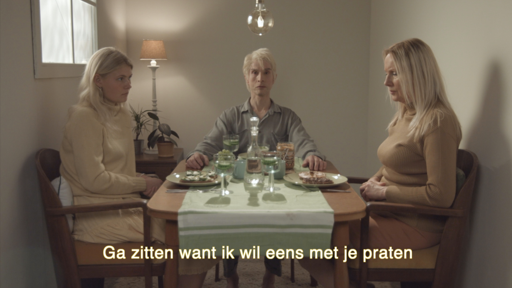
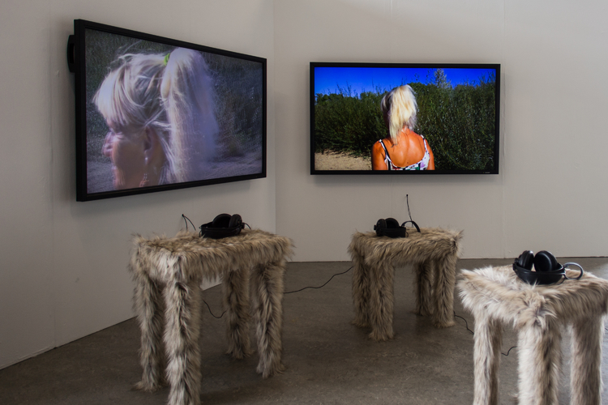
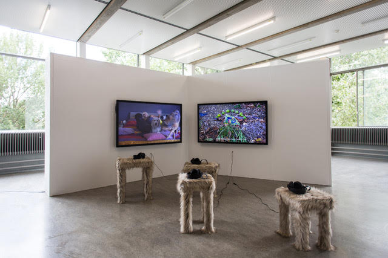
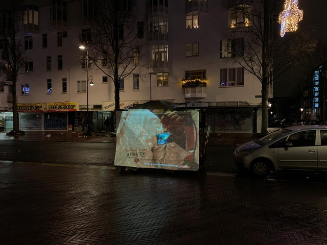
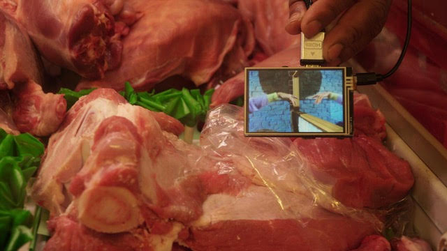
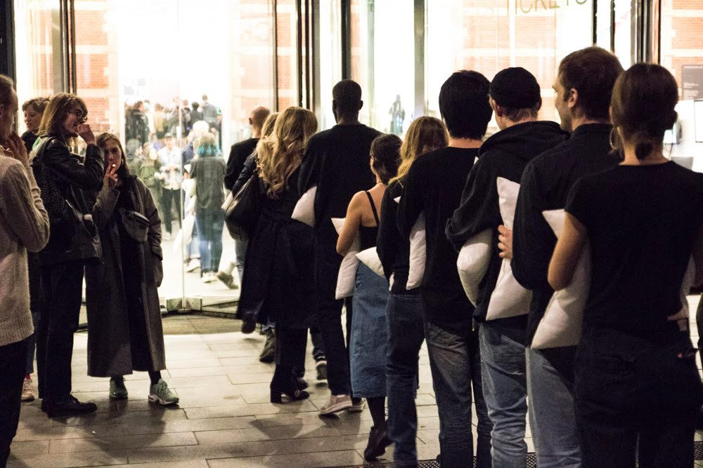

The Best Was Supposed to Come
2020
Film still
Solo Show
The Orchid & The Wasp, Amsterdam


Men are Dogs
2019
Video & Sound installation
Graduation Show
Gerrit Rietveld Academie, Amsterdam

Untitled
2019
Collaboration with Suni Satoinong
Dapper, Amsterdam

Untitled
2019
Film still
Collaboration with Suni Satoinong
Published in Sauce Magazine, Amsterdam

What is Happening to our Brain?
2017
Group Performance
Stedelijk Museum, Amsterdam